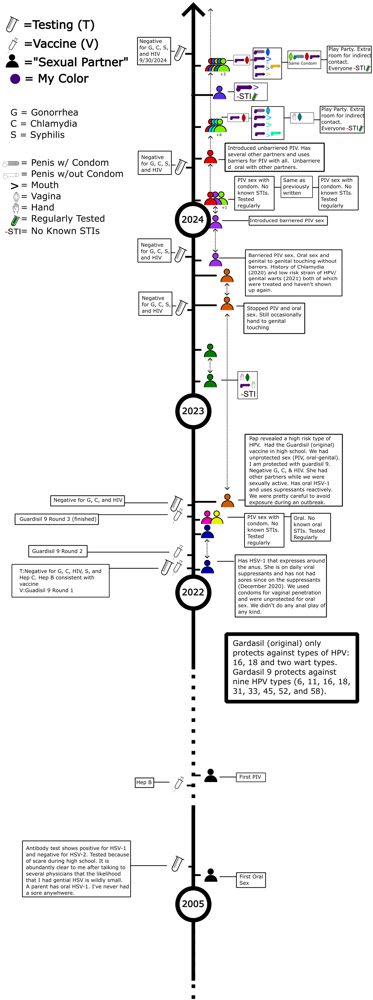

Boundaries
- My sexual partners communicate in a way to protect my sexual health.
- They disclose their relevant STI status.
- They disclose any activity that has the potential to change their STI status (e.g., sex with a new partner).
Sexual Health Summary
- To the best of my knowledge (see timeline for more details):
- I am negative for Gonorhhea, Chlamydia, Syphilis, Hep C and HIV
- I am vaccinated against Hep B and HPV (Guardisil 9)
- I have some risk, but my analysis is the risk is low, of harboring a high risk strain of HPV.
- I have tested positive for the antibodies of HSV-1 (negative for HSV-2). I have never had a sore and have no reason to believe I have genital HSV-1/2. My mom had oral HSV-1
Timeline
- Hand to genital activity is not shown except in cases where there is a reasonable risk of the hand being a vector between other areas (e.g. genital-hand-genital, genital-hand-mouth, etc)
